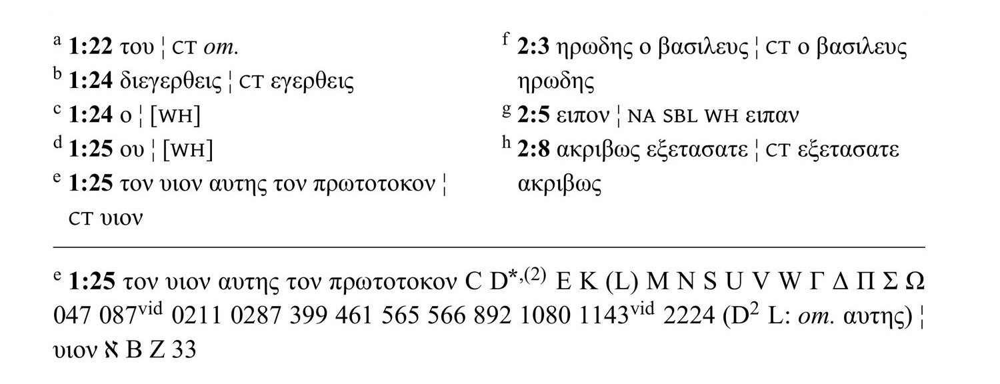

The Robinson-Pierpont 2026 text
The main text follows The New Testament in the Original Greek: Byzantine Textform 2026, edited by Maurice A. Robinson and William G. Pierpont. Every change since the 2005 edition is listed in Appendix A.
The Robinson-Pierpont 2026 text, compared on every page with eleven landmark editions, and with the manuscripts behind fifty key variants.
Free from Biblical Studies and Reviews. In the public domain since 16 August 2026. Other ways to read it.

Four tools built from the edition itself. Each one helps you get the most from the printed text and the data behind it.
28 read the longer form
4 read the shorter form
Read each variant in plain English, then see every manuscript that supports each reading on a timeline from the third century on.
Browse the variantsHow often each edition differs from the main text
All 10,170 notes of the Edition Apparatus, counted. See which editions agree with the main text, and where they part ways.
See the figures34 readings found, with page numbers
Find every note by edition, passage, kind of difference, or Greek word. Type Greek or CCAT beta code, and download the results as a spreadsheet.
Search the notesThe 125 cited manuscripts, by century
Every manuscript cited in the edition, with its name, date and location, and links to its entry in the Liste and to images.
Browse the manuscriptsFor pastors, students, and scholars of Scripture. When modern translations differ, this edition lets you see which Greek New Testament editions stand behind each reading, and, for fifty significant variants, what the early manuscripts say.
The main text follows The New Testament in the Original Greek: Byzantine Textform 2026, edited by Maurice A. Robinson and William G. Pierpont. Every change since the 2005 edition is listed in Appendix A.
The first set of footnotes. New digital collations compare the main text against eleven landmark printed editions and show where they read differently. Minor differences, such as accents, punctuation, movable nu and final sigma, and spacing in compound words, are not recorded.
The second set of footnotes, printed below the first. For fifty significant variants chosen by the editorial committee, it lists every papyrus and uncial extant at that point (ninth century and earlier), plus select minuscules through the tenth century.
Edition changes, corrections to the comparison editions, alternate readings and lengthy variants, and a dated list of every manuscript cited. See the appendices.
The eleven editions compared in the Edition Apparatus fall into three families. The apparatus also records the alternate Byzantine readings that Robinson-Pierpont offer for their own text.
Browse the fifty variants, and see the manuscripts on a timeline →
This is page 3 of the edition, Matthew 1:23–2:9. Click any outlined part of the page to see what it does.

Click the Greek text, a verse number, a small footnote letter, or either set of footnotes at the bottom of the page. You can also use the buttons below.
Fifty of these notes have a page of their own. Browse the fifty variants.
Page through a few pages of the edition. Click a page to open it full size.
To find a particular note in the apparatus, use Variant search.
Four appendices at the back of the volume document the text and the evidence behind the apparatuses.
Every change to the Robinson-Pierpont main text from 2005 to 2018 and from 2018 to 2026, plus the changes to their alternate Byzantine readings.
The typographical errors found in the printed comparison editions, and the readings the apparatus records in their place.
Alternate Byzantine readings in the Pericope Adulterae (John 7:53–8:11) and Acts 24:6–8, and the long variants of Matthew 23:13–14 printed in full.
Every manuscript cited in the Manuscript Apparatus, with its Gregory-Aland number, letter, contents and accepted date. Browse them with names and locations.
The entire edition, including the apparatuses and introductory material, is in the public domain. Scripture belongs to the Body of Christ.
“Guardian Press, LLC and J. Jeffrey Dodson hereby dedicate this work to the public domain by waiving all rights to the work worldwide under copyright law.”
Please cite the edition in your own work. Choose a style and copy it.
Dodson, J. Jeffrey, and Dwayne Green, eds. The Greek New Testament According to the Byzantine Text. Guardian Press, 2026. https://greeknt.org/.
The complete edition, 752 pages with both apparatuses and all four appendices, is free to download from Biblical Studies and Reviews.
The file is hosted by Biblical Studies and Reviews, not by Guardian Press.
An independent website hosts a digital version of the text and apparatus that you can read in your browser.
That site is run independently of Guardian Press.
Because the edition is in the public domain, Biblical Studies and Reviews has published it independently as a Smyth-sewn hardback with wide margins for notes. Smyth-sewn means the pages are stitched in sections, so the book opens flat and lasts.
Guardian Press does not print or sell the hardback. Please direct questions about it to its publisher.